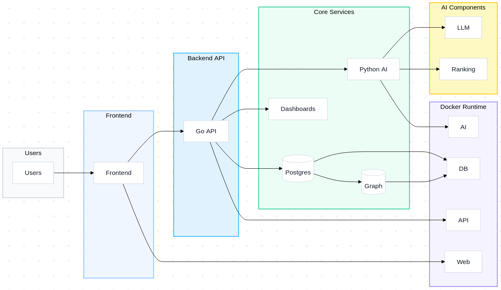
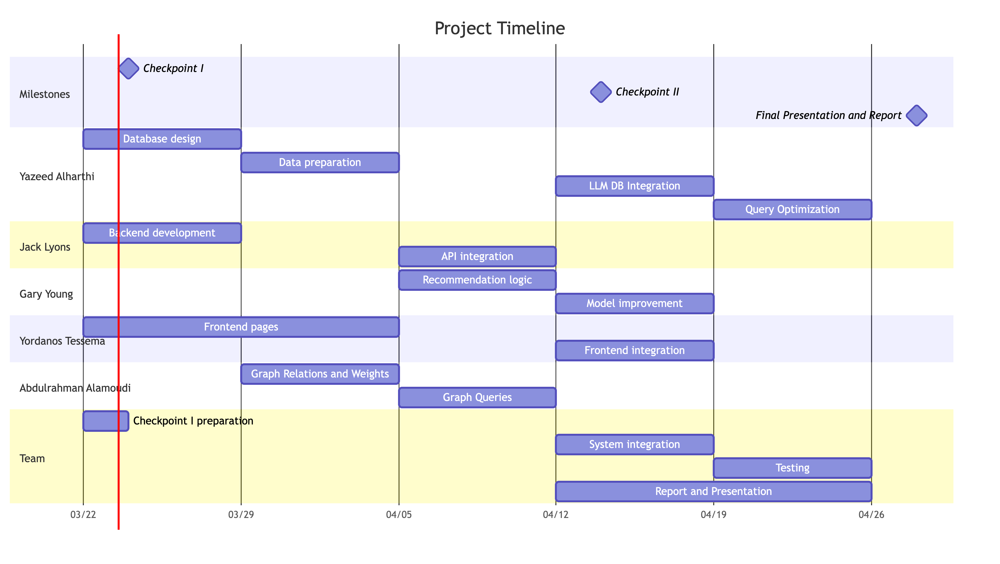

A Hybrid LLM and Relational Approach for Personalized Movie Recommendation
CS 5614 - Database Management Systems · Virginia Tech · Spring 2026
CineMatch is a hybrid movie recommendation system where each component handles the part of the problem it is suited for. XGBoost handles scoring and ranking. An LLM enriches the movie database through a PostgreSQL trigger pipeline, converts natural language queries into SQL, and generates short explanations for recommendations. PostgreSQL manages all structured storage, and Apache AGE handles graph traversal for related-title discovery.
The system collects structured preference data at signup so recommendations are personalized from the first session, addressing the cold-start problem. Mood is treated as a real feature in the user profile, updated through feedback.

We finalized the database schema, built the backend foundation in Go, and created tooling for data ingestion, migrations, and local development. Key design decisions around LLM guardrails and location-based recommendations were documented.
